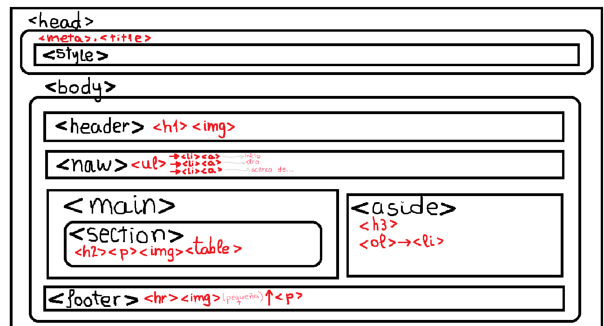
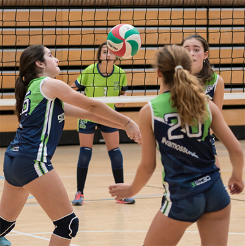

Os voy a dejar por aqui unas tareas sobre paquinas web con las que he aprendido a hacer esta.
- La segunda tarea web con todas las etiquetas que vimos de HTML Click aqui para descargar la tarea 2.
- La tercera tarea sobre HTML5 y CSS Click aqui para descargar la tarea 3.
- La cuarta tarea sobre menús con CSS y herramienta de inspección de páginas web. Click aqui para descargar la tarea 4.
Tambien os las podeis descargar si teneis curiosidad!!
¿COMO HE ESTRUCTURADO LA PAGINA? 
El layout o estructura de un interfaz web es la manera de organizar o disponer los elementos visuales en la página. Se compone de una serie de bloques de ciertas dimensiones en los que se colocará el contenido. Estos bloques suelen trazarse a través de etiquetas HTML comunes, como los que se muestran en la imagen.

Tambien puedes hacer click en esta imagen/logo para volver a la pagina principal!
Haz click aqui para ver mi otra pagina webEn esta pagina web contesto a algunas preguntas interesantes!!
MIS COSAS FAVORITAS
En el dia de hoy voy a contaros mis cosas favoritas del mundoo, para que asi me conozcais un poquito mejor. :)
| PAISAJES | ANIMALES | DEPORTES | PROFESION |
| No hay nada mas bonto que un atardecer,que me decis,¿atardecer o amanecer? | Los animales, mas en concreto los gatitos. | Me encanta jugar al voley!! (Este es mi equipo, haz clic en la foto!!) | Soy veterinaria!!. |
| Aqui teneis una foto que hice el otro dia!! |  |
 |  |